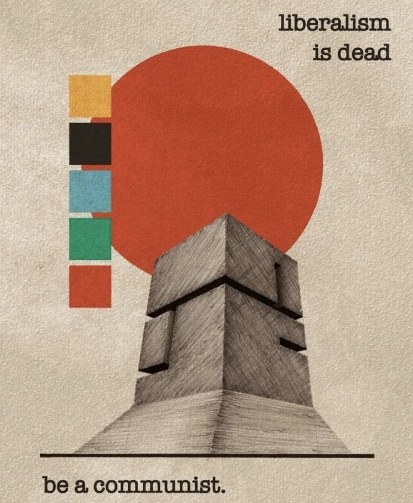

Publication sur X
Face à la mise en concurrence, construire le commun
Date de publication sur X · 10 avril 2026
Repères éditoriaux
Notre publication prend position contre les effets du libéralisme sur le travail, les solidarités et la vie quotidienne.
Texte de la publication sur X
Le libéralisme promet la liberté. Il livre la solitude, la précarité, la mise en concurrence de tous contre tous.
Le communisme c’est le commun. Ce qu’on construit ensemble parce que seul on crève.
Soyons la vie. Soyons communistes. https://t.co/zmUMmUeZxK

Sources
PCF 79 · @79Parti sur X · AR-0005-TW-2042601403386847359
À lire aussi · Face au budget d’austérité, le PCF propose un pacte d’avenir